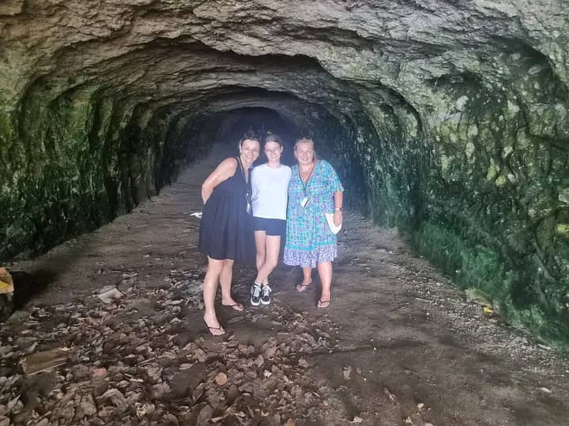

There's a place beneath the hills of Rabaul where time stands still. Where the air is cool and damp, and echoes of the past seem to whisper from the walls. The Japanese tunnels of Rabaul are more than just tourist attractions—they are monuments to a turbulent chapter in our history, carved into the earth by soldiers who were far from home.
I first visited these tunnels as a child, holding my grandfather's hand as we walked through the darkness. He would tell me stories—not from personal experience, but from the tales passed down by his own father who lived through the war. Back then, I didn't fully understand the weight of what I was seeing. Now, as a guide and historian, I've come to appreciate these tunnels for what they truly represent: resilience, sacrifice, and the enduring human spirit.

The Japanese Occupation of Rabaul: A History
The Japanese occupation of Rabaul began in January 1942, just weeks after the attack on Pearl Harbor. What followed was a massive military build-up that transformed this beautiful harbor town into the largest Japanese military base in the South Pacific. At its peak, more than 100,000 Japanese military personnel were stationed in and around Rabaul.
Rabaul's strategic location—a natural deep-water harbor surrounded by volcanic hills—made it an ideal naval and air base. The Japanese recognized its importance immediately and set about fortifying the area against the inevitable Allied counterattack.
A Network Beneath the Surface: 500 Kilometers of History
To protect their operations from Allied bombing raids, Japanese engineers and soldiers began carving an extensive network of tunnels into the volcanic hills surrounding Rabaul. Over the course of the war, more than 500 kilometers of tunnels were dug—all by hand, using little more than picks, shovels, and sheer determination.
These tunnels served as command centers, hospitals, ammunition stores, communication hubs, and living quarters. Some were large enough to accommodate hundreds of soldiers, while others were narrow passages meant for single-file movement. Walking through them today, you can still see the marks left by the tools that shaped them—scratch marks in the stone, carved shelves for storage, and in some places, faded Japanese characters painted on the walls.
The tunnels were dug at night, under the cover of darkness, to avoid detection by Allied aircraft. Soldiers worked by torchlight, knowing that if they were caught above ground during daylight, they would be easy targets. The work was dangerous—tunnel collapses were common, and the volcanic rock could be unstable.
Walking Through History: What to See Inside the Tunnels
Our tour began at one of the larger tunnel complexes, nestled into the hillside just outside what was once the heart of Japanese operations. Our guide, a local historian named Peter, has spent decades studying these tunnels and the stories connected to them.
"These tunnels were dug at night," Peter explained as we stood at the entrance. "The soldiers worked in darkness, by torchlight, while Allied planes flew overhead. They knew that if they were caught above ground during daylight, they would be easy targets. So they worked when the sky was dark."
We stepped inside, and the temperature immediately dropped. The air was cool and heavy with moisture. Electric lights now line the main passages, but Peter turned them off for a moment, allowing us to experience the darkness as the soldiers would have known it.
It was absolute. The kind of darkness you can feel pressing against your skin. For a few seconds, none of us spoke. Then Peter's flashlight clicked on, and he continued.
"Imagine living in this darkness for months. Eating, sleeping, fighting, waiting. Some of these men were just boys—eighteen, nineteen years old. Far from their families in Japan. Many of them knew they would never return home."
We walked deeper into the tunnel system, passing rooms that once served different purposes. One chamber was a hospital, where surgeons operated by candlelight. Another was a communication center, where messages were sent and received in code. A narrow passage led to a lookout point, where Japanese soldiers once watched for approaching ships.
Stories Carved in Stone: Personal Marks of History
One of the most moving parts of our visit came when Peter showed us a small alcove off the main passage. On the wall, faint but still visible, were Japanese characters carved into the stone.
"This one says 'home,'" Peter translated. "And this one says 'prayer.' A soldier carved these, perhaps on a quiet night when he was thinking of his family."
Further along, we found another inscription: a simple calendar, marking the days. Peter explained that soldiers often kept track of time this way, marking off each day as it passed, holding onto the hope that the war would end and they would return home.
For me, these small, personal marks on the stone are what make the tunnels so powerful. It's easy to think of war in terms of battles and strategies, of numbers and dates. But these tunnels remind us that war is also made up of individual moments—of young men who carved their hopes and fears into rock, who waited in darkness, who never stopped thinking of home.
After the War: Preservation and Remembrance
The war in the Pacific ended in August 1945. The Japanese surrender was signed in Rabaul on September 6, 1945—a full four days after the formal surrender on the USS Missouri in Tokyo Bay. More than 130,000 Japanese soldiers were interned in Rabaul, awaiting repatriation to Japan.
For decades after the war, the tunnels sat largely forgotten. The jungle began to reclaim them, and many of the entrances collapsed or were overgrown. It wasn't until the 1970s that interest in preserving these historical sites began to grow. Today, several tunnel complexes have been restored and are open to visitors, offering a unique window into this challenging period of our history.
Walking through the tunnels now, it's impossible not to think about the complex layers of history they represent. For many Papua New Guineans, the war years were a time of displacement, hardship, and suffering. The tunnels are a reminder of a foreign occupation that brought violence and upheaval to our shores.
But they also represent a shared history—one that connects Papua New Guinea to Japan, Australia, the United States, and the broader Pacific region. In the years since the war, Japan has become an important partner for Papua New Guinea, contributing to our development and supporting educational and cultural exchange programs. The tunnels stand as a reminder of how far we've come, and the importance of building peace from the ashes of conflict.
Visitor Information: How to Explore the Japanese Tunnels
Location: The Japanese tunnels are located throughout the hills surrounding Rabaul town. The main tourist-accessible tunnels are at Tunnel Hill and various sites around the former Japanese military headquarters area.
Access: Tours depart from Rabaul and Kokopo. The drive from Kokopo takes approximately 45 minutes. Some tunnel sites require a short walk from the parking area.
Best Time to Visit: The dry season from May to October offers the best conditions. The tunnels themselves are cool year-round (around 20°C/68°F), but access roads are easier during dry weather.
What to Bring: Comfortable walking shoes (the floors can be uneven), a light jacket or sweater (tunnels are cool), insect repellent, and a camera. A flashlight or headlamp is useful for exploring darker sections.
Photography: Photography is permitted inside the tunnels. Use a camera with good low-light capability or a flash. Tripods can be useful for detailed shots of inscriptions and carvings.
Guided Tours: Bismark Touris offers guided historical tours of the Japanese tunnels and other WWII sites in Rabaul. Our guides share the stories of the soldiers who built and lived in these tunnels, as well as the local experience during the war.
A Place for Reflection
As our tour came to an end, we stood outside the tunnel entrance, blinking in the bright afternoon sun. The contrast was striking—the cool darkness of the tunnels, and the warm light of a peaceful Rabaul day. Birds sang in the trees. A light breeze carried the scent of flowers from nearby gardens.
It's hard to imagine that this quiet hillside was once a place of war. That planes screamed overhead and bombs fell and soldiers waited in darkness for a war that seemed like it would never end.
But that's the gift of places like these tunnels. They remind us that peace is precious. That the world we live in today, with all its complexities, was shaped by the sacrifices of those who came before us.
As we drove back to Kokopo, I thought about the soldiers who carved these tunnels, the local people who endured the war, and the generations since who have worked to preserve this history. And I thought about the importance of sharing these stories—not just for the past, but for the future.
Because the tunnels of Rabaul have something to teach all of us. They teach us about resilience. About the human capacity to endure, even in the darkest of circumstances. About the importance of remembering, so that we don't repeat the mistakes of the past. And about hope—the hope that even in the midst of conflict, there is the possibility of peace.
Maria Tore is a guide and historian at Bismark Touris, with a deep interest in preserving and sharing the history of East New Britain. She has been leading tours of the Japanese tunnels for over a decade and believes that understanding our past is essential to building a peaceful future.
📖 You might also enjoy:
A Journey to Bitapaka War Cemetery: Remembering Heroes — Visit the final resting place of over 1,100 Commonwealth soldiers in Rabaul.
The Day the Earth Roared: Remembering the 1994 Rabaul Volcanic Eruption — Learn about the eruption that changed Rabaul forever.
Kokoda Track Trekking: The Ultimate Guide to PNG's Historic Trail of Courage — Explore the legendary WWII trail.
🏛️ Want to explore the WWII tunnels for yourself?
Join one of our guided history tours and walk through these incredible underground passages while learning about their fascinating history. Our guides bring the stories of the tunnels to life.
Book Your Historical Tour →